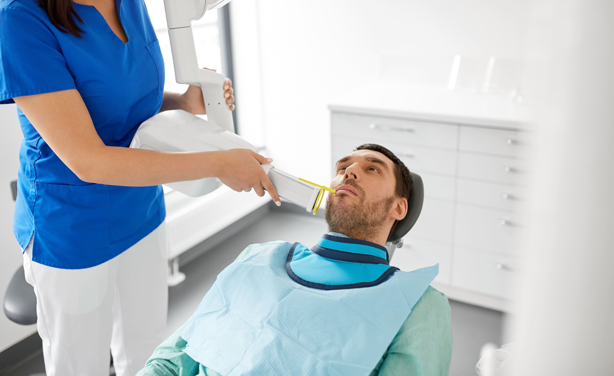
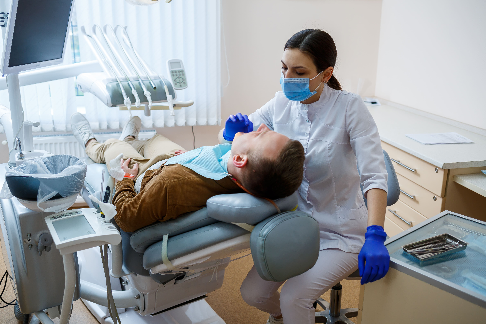

Our Services
We provide comprehensive preventive and restorative dental care for all ages in Razole.
Everyday & Preventive Care
At 100SMILES Dental Care, we understand the diverse needs of our patients and offer a complete range of services to maintain healthy, confident smiles. From regular check-ups to advanced restorative and cosmetic treatments, our experienced team is here for you.
- Routine dental exams and cleanings.
- Fillings, crowns, and bridges.
- Dental implants and orthodontic care.
- Cosmetic dentistry (whitening, veneers).
- Root canal treatments and oral surgeries.
- Emergency dental services.
- Patient education and hygiene guidance.
Annual Dental Check-Up Package
The Annual Dental Check-Up package offers a complete yearly evaluation to maintain excellent oral health and detect issues early. It’s an easy way to stay proactive about your dental wellbeing.
- Physical Examination: overall assessment of dental health and comfort.
- Professional Cleaning: removal of plaque, tartar, and stains.
- X-Rays: imaging for early detection of hidden issues.
- Dental Review: evaluation of gums, teeth, and oral hygiene.
- Nutritional Guidance: advice for maintaining a strong, healthy smile.
- Additional Tests: blood or lab work when medically necessary.